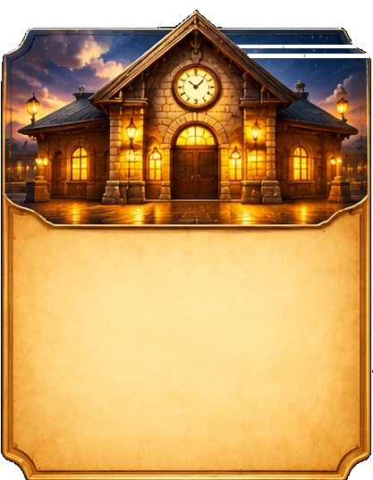
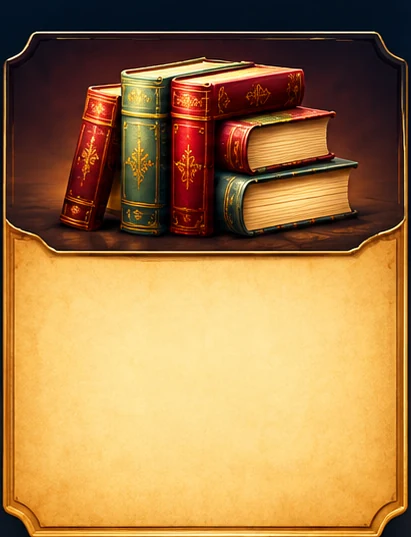
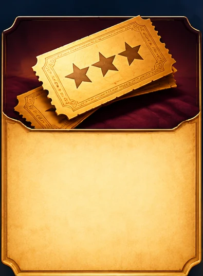
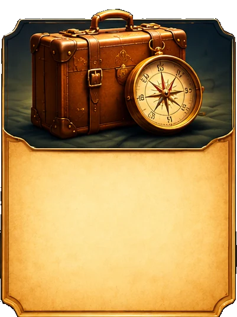
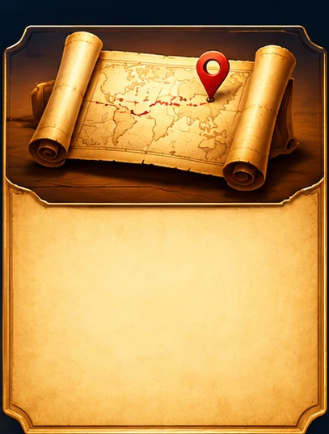

İlk durak henüz boş
İlk kitabımızı birlikte seçeceğiz. Seçim yapıldığında burada yerini alacak.
Kitaplar yalnızca kulüp içi arşiv amaçlı listelenir. Kapak görseli kullanılmaz — telif haklarına saygı için her durak kendi tasarımıyla temsil edilir.
Çocuk Kitap Kulübü
Kitaplarla yola çık, hayal gücünü keşfet, arkadaşlarınla paylaş!
Yolculuğa Başla
İstasyonlarKitaplarla uğradığımız duraklar
Kitap DünyasıOkuduklarımız, önerilerimiz ve keşiflerimiz
EtkinliklerBuluşmalar, atölyeler ve özel seferler
YolcularKulüp üyelerimiz ve yolculuk notları
HakkımızdaHikâye İstasyonu'nun hikâyesi, amacı ve ekibimizHakkımızda
Hikâye İstasyonu, 9 yaşındaki Can'ın kurduğu bir çocuk kitap kulübü. Her ay bir kitap seçiyor, okuyor ve o kitap hakkında konuşuyoruz.
“Kitapları seviyorum, ama okuduğum kitabı anlatacak birini bulmak zor. Bir gün arkadaşlarıma ‘her ay bir kitap okuyup konuşsak ne olur?’ diye sordum. Fikir büyüdü: bir istasyon kurduk.”
Kitabı okumak yarım iş. Asıl iş, okuduğunu anlatmak ve başkasının gördüğünü dinlemek.
“Pas” demek serbest. Kimse konuşmaya zorlanmaz, kimse sözü tekeline almaz.
Çizim, mektup, kısa yazı, canlandırma… Her durakta küçük bir üretim var.
İstasyonlar
Her toplantı bir durak. Beş adımda ilerliyoruz — hiçbiri zorunlu değil, hepsi birlikte.
Kitabı birlikte seçiyoruz. Öneriler çocuklardan geliyor, oylamayla karar veriyoruz. Kitap almak zorunda değilsin — kütüphane ve ödünç alma önce gelir.
Ayda bir, yaklaşık 45 dakika. Mekân ve saat velilere önceden duyurulur.
Sohbet sırası herkese gelir. “Pas” demek serbest. Kimse fikrini savunmak zorunda değil, sadece paylaşır.
Küçük yaratıcı etkinlikler: kendi durağını çizmek, bir karaktere mektup yazmak, sahneyi canlandırmak.
Bir sonraki durağı birlikte seçiyoruz. Herkes en az bir kitap önerebilir.
Kitap Dünyası
Okuduğumuz kitaplar burada birikir. İlk durak, ilk toplantıda birlikte seçilecek.
İlk kitabımızı birlikte seçeceğiz. Seçim yapıldığında burada yerini alacak.
Kitaplar yalnızca kulüp içi arşiv amaçlı listelenir. Kapak görseli kullanılmaz — telif haklarına saygı için her durak kendi tasarımıyla temsil edilir.
Yolculuk boyunca keşfettiğimiz alanlar
Kategoriler örnektir; kulüp üyeleri kendi ilgi alanlarına göre yenilerini ekler.
Etkinlikler
Buluşmalar, atölyeler ve özel seferler. Tarihler kesinleştikçe bu biletler dolar.
Seçilen kitabı konuşuyoruz: neyi sevdik, neyi düşündük, kim neyi farklı okudu.
Karaktere mektup, sahne canlandırma, kendi durağını çizme.
Herkes bir kitap önerir; oylamayla bir sonraki durağı seçeriz.
Pilot dönemde yeni etkinlik türleri deniyoruz. Öneriler velilerden de gelebilir.
Yolcular
Kulüp üyelerimiz, yolculuk notları ve birlikte ürettiklerimiz. Çocuklara ait kişisel bilgi veya görsel paylaşılmaz.
Aynı kitabı okuyan çocuklar birbirini dinlemeyi öğreniyor.
Herkes okuduğunu anlatıyor, önerdiği kitabı savunuyor.
Her durakta küçük bir üretim: çizim, mektup, canlandırma.
Çocukların fotoğrafı, videosu, sesi, tam adı veya okulu yayınlanmaz. Çevrim içi buluşmalarda kayıt alınmaz.
Veli Bilgilendirme
Çocuklarımızın güvenliği ve huzuru en temel önceliğimizdir. Kulübümüzde aşağıdaki kurallar istisnasız uygulanır.
Çevrim içi katılım ilkelerini okuyun
Onay, yalnızca çevrim içi buluşmaya katılım içindir.
Kısa tanışma formu yayımlandığında, çevrim içi katılım onayı ilgili velilere e-posta ile iletilecek.
Yolculuğa Katıl
Hiçbir adım zorunlu değil; ilk adımı atman yeterli. Kontenjan 10–15 çocuk.
Kısa tanışma formunu doldur. Veli e-postası istenir.
Çevrim içi buluşma ilkeleri veliye e-posta ile iletilir.
Tarih, saat ve güvenli toplantı bağlantısı veliye e-posta ile bildirilir.
Tanışıyor, Şermin Yaşar'ın Telefon Melefon Yok kitabıyla yola çıkıyoruz.
Katılım gönüllülük esasına dayanır. Kontenjan 10–15 çocuk.
Google Form bağlantısı kısa süre içinde burada yayımlanacak.
Sık Sorulanlar
Hayır. Katılım için kitabı bitirmiş olmak gerekmiyor. Okuyamayan çocuk da sohbete katılır; bu kural her toplantının açılışında açıkça söylenir.
Hayır. Kütüphane ve ödünç alma önceliklidir. Satın alma zorunluluğu hiçbir koşulda yaratılmaz.
Hayır. Fotoğraf, video, ses veya ekran kaydı alınmaz; çocuklara ait içerikler yayımlanmaz.
Bağlantı yalnızca kayıtlı velilere e-posta ile iletilir ve üçüncü kişilerle paylaşılmaz.
“Pas” deme hakkı vardır. Sıra herkese gelir ama kimse zorlanmaz. Amaç performans değil, güvenli bir sohbet ortamı.